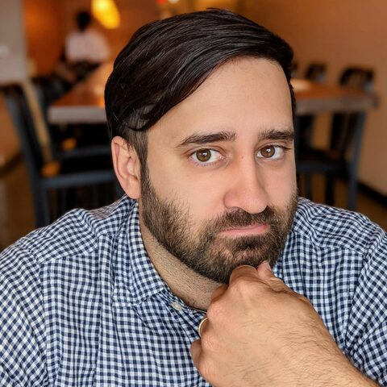

Daniel Puthawala
Nationwide Children's Hospital · USA
GA4GH product co-lead within the Genomic Knowledge Workstream. Cat-VRS, used to represent and reason about sets of genomic variants; bioinformatics tool and software development mostly in cancer research and variant analysis — the VICC variant normalizer, VICC MetaKB, CIViC and DGIdb. The PhD was in sentence processing, mixing formal theory, experimental psychology and computational modelling.
Topics: Variants, FAIR/Standards, Knowledge graphs, Clinical
Codes in: Python, LaTeX